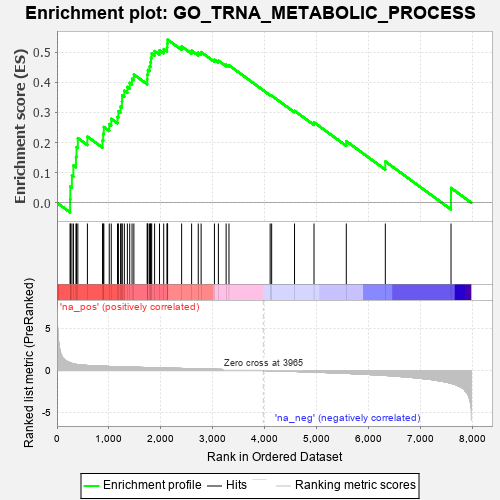
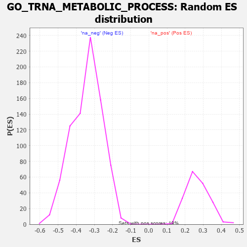

| | | Dataset | 7d |
| Phenotype | NoPhenotypeAvailable |
| Upregulated in class | na_pos |
| GeneSet | GO_TRNA_METABOLIC_PROCESS |
| Enrichment Score (ES) | 0.54180247 |
| Normalized Enrichment Score (NES) | 2.0158224 |
| Nominal p-value | 0.0 |
| FDR q-value | 0.06261516 |
| FWER p-Value | 0.208 |
Table: GSEA Results Summary

Fig 1: Enrichment plot: GO_TRNA_METABOLIC_PROCESS
Profile of the Running ES Score & Positions of GeneSet Members on the Rank Ordered List
| PROBE | GENE SYMBOL | GENE_TITLE | RANK IN GENE LIST | RANK METRIC SCORE | RUNNING ES | CORE ENRICHMENT | | 1 | THADA | | | 253 | 0.931 | 0.0118 | Yes |
| 2 | LAGE3 | | | 257 | 0.914 | 0.0543 | Yes |
| 3 | DPH3 | | | 287 | 0.844 | 0.0903 | Yes |
| 4 | QTRT2 | | | 316 | 0.792 | 0.1239 | Yes |
| 5 | ELP4 | | | 365 | 0.734 | 0.1523 | Yes |
| 6 | POP1 | | | 376 | 0.720 | 0.1849 | Yes |
| 7 | RPP25 | | | 401 | 0.699 | 0.2147 | Yes |
| 8 | POP5 | | | 585 | 0.599 | 0.2197 | Yes |
| 9 | POP7 | | | 876 | 0.511 | 0.2071 | Yes |
| 10 | ADAT3 | | | 890 | 0.508 | 0.2293 | Yes |
| 11 | NSUN2 | | | 901 | 0.506 | 0.2518 | Yes |
| 12 | CPSF1 | | | 1005 | 0.482 | 0.2614 | Yes |
| 13 | CTU2 | | | 1044 | 0.475 | 0.2789 | Yes |
| 14 | GRSF1 | | | 1164 | 0.452 | 0.2851 | Yes |
| 15 | CLP1 | | | 1182 | 0.450 | 0.3040 | Yes |
| 16 | ELP3 | | | 1223 | 0.442 | 0.3198 | Yes |
| 17 | PUS10 | | | 1249 | 0.438 | 0.3372 | Yes |
| 18 | DUS4L | | | 1254 | 0.438 | 0.3572 | Yes |
| 19 | TPRKB | | | 1296 | 0.430 | 0.3722 | Yes |
| 20 | DTWD2 | | | 1354 | 0.418 | 0.3847 | Yes |
| 21 | WDR4 | | | 1399 | 0.410 | 0.3983 | Yes |
| 22 | LSM6 | | | 1444 | 0.402 | 0.4117 | Yes |
| 23 | TRNT1 | | | 1479 | 0.394 | 0.4259 | Yes |
| 24 | ELP1 | | | 1736 | 0.348 | 0.4099 | Yes |
| 25 | RTCB | | | 1739 | 0.347 | 0.4259 | Yes |
| 26 | KTI12 | | | 1749 | 0.345 | 0.4410 | Yes |
| 27 | URM1 | | | 1781 | 0.340 | 0.4531 | Yes |
| 28 | DTWD1 | | | 1799 | 0.337 | 0.4667 | Yes |
| 29 | PTCD1 | | | 1808 | 0.335 | 0.4815 | Yes |
| 30 | CTU1 | | | 1822 | 0.333 | 0.4955 | Yes |
| 31 | GATC | | | 1878 | 0.323 | 0.5037 | Yes |
| 32 | PUS3 | | | 1972 | 0.309 | 0.5065 | Yes |
| 33 | DTD2 | | | 2053 | 0.298 | 0.5104 | Yes |
| 34 | CPSF4 | | | 2118 | 0.288 | 0.5158 | Yes |
| 35 | DUS1L | | | 2122 | 0.288 | 0.5290 | Yes |
| 36 | GATB | | | 2128 | 0.287 | 0.5418 | Yes |
| 37 | TYW1 | | | 2398 | 0.246 | 0.5194 | No |
| 38 | PSTK | | | 2590 | 0.215 | 0.5053 | No |
| 39 | DDX1 | | | 2718 | 0.196 | 0.4985 | No |
| 40 | ELP2 | | | 2773 | 0.187 | 0.5005 | No |
| 41 | CSTF2 | | | 3029 | 0.145 | 0.4751 | No |
| 42 | AIMP1 | | | 3105 | 0.136 | 0.4720 | No |
| 43 | PUS7 | | | 3254 | 0.113 | 0.4586 | No |
| 44 | TYW5 | | | 3309 | 0.104 | 0.4567 | No |
| 45 | ADAT1 | | | 4101 | -0.024 | 0.3580 | No |
| 46 | TYW3 | | | 4130 | -0.029 | 0.3558 | No |
| 47 | DUS3L | | | 4570 | -0.109 | 0.3055 | No |
| 48 | TRPT1 | | | 4945 | -0.186 | 0.2670 | No |
| 49 | OSGEP | | | 5566 | -0.337 | 0.2046 | No |
| 50 | ADAT2 | | | 6317 | -0.582 | 0.1372 | No |
| 51 | MOCS3 | | | 7581 | -1.523 | 0.0492 | No |
Table: GSEA details [plain text format]

Fig 2: GO_TRNA_METABOLIC_PROCESS: Random ES distribution
Gene set null distribution of ES for GO_TRNA_METABOLIC_PROCESS